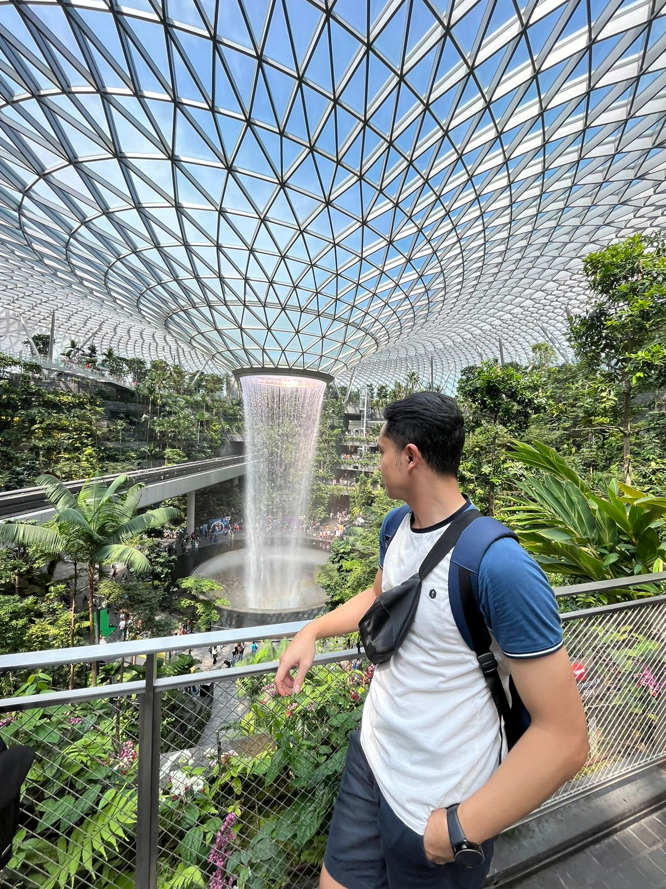

Manta
A social diving app. I contributed to product discovery, market research, development coordination and early-stage delivery.
Business analysis · Digital product development
I bring an industrial engineering perspective to digital products and business processes.

My background spans industrial operations, cloud services and digital product development. I’ve worked on problems ranging from ship-service scheduling and manufacturing operations to web application support.
At Manta, I brought that problem-solving approach to an early-stage product through market research, product discovery and development coordination. My studies in business administration, industrial engineering and software development give me several ways to approach the same question: what needs to change for the people using the system?
Configured, troubleshot and administered server-side web applications while training in cloud architecture, analysis and project management.
Helped redevelop an existing system for customer account management and scheduling during on-the-job training.
Worked on construction and layout design and developed a social media strategy to attract projects.
PT Astra Otoparts Tbk · 2018
Supported manufacturing excellence and problem-solving across production and operations.
PT Pelabuhan Indonesia III · Aug 2015 – Jan 2016
Worked on scheduling for berths, cranes, and ship loading and unloading.
PT Pertamina, Refinery Unit VI Balongan · 2015
Supported planning for crude oil optimization.
JavaScript, React, Next.js, Node.js and Git.
Supply chain management, optimization, statistics and database systems.
A social diving app. I contributed to product discovery, market research, development coordination and early-stage delivery.
The repository includes separate frontend and backend directories for the BrangKas web application.
A React project from the full-stack web development program.
View an earlier résumé on Google Drive, or email me for the latest version.
Open résuméGet in touch about roles in business analysis, digital product development or process improvement.